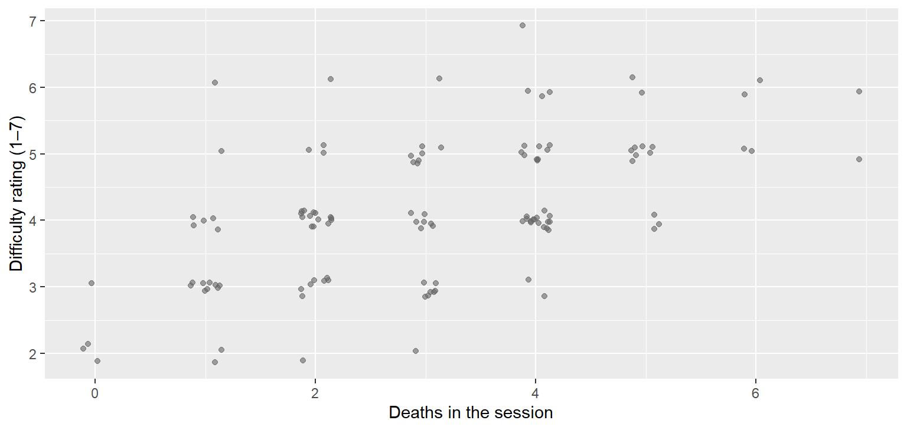
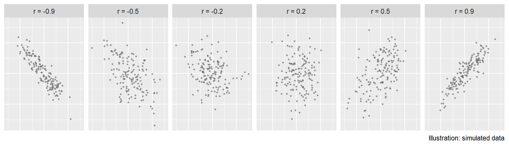
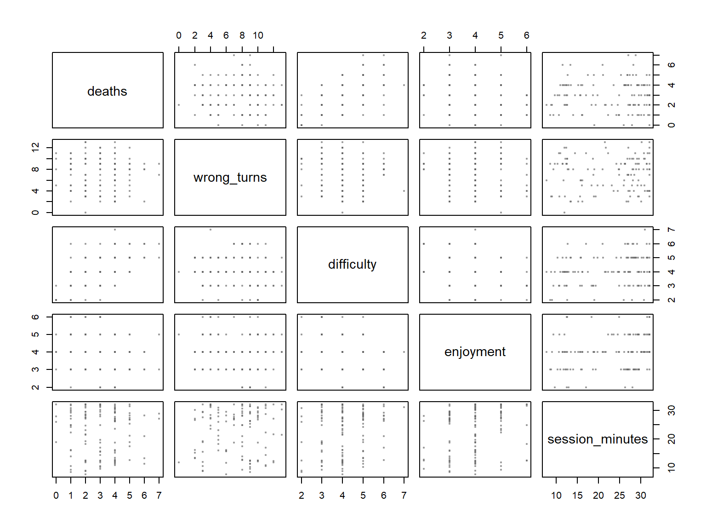
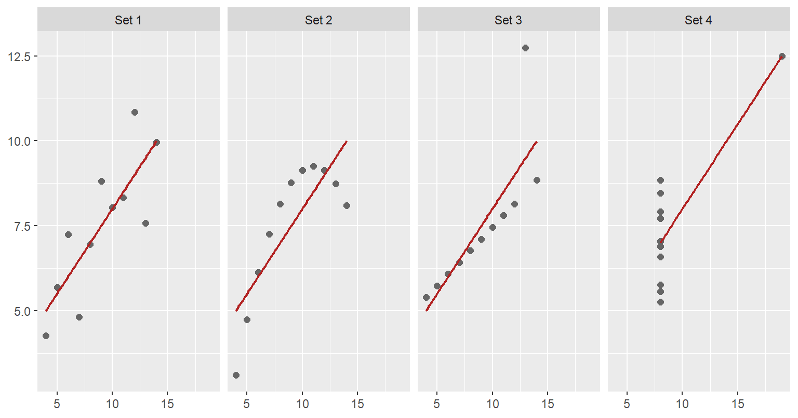
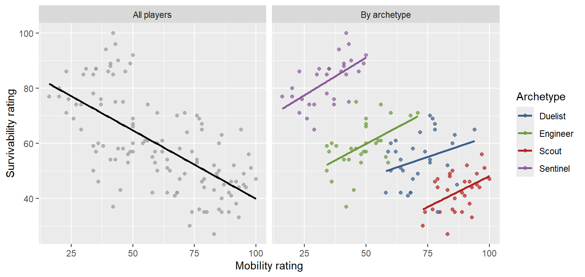
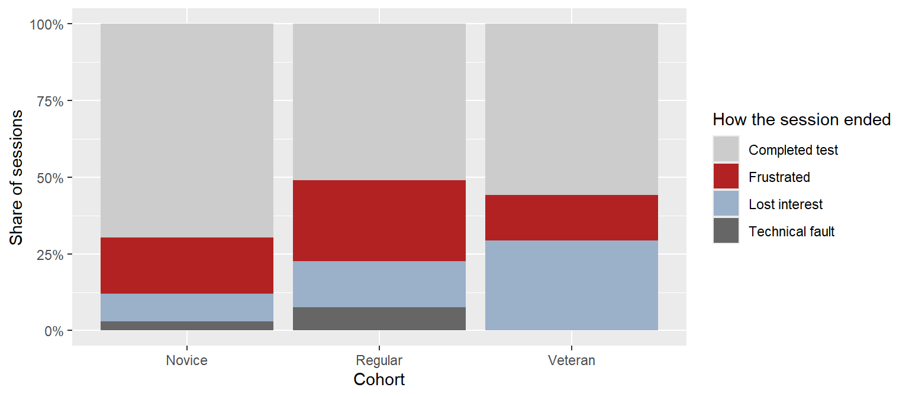

ggplot(sessions, aes(x = deaths, y = difficulty)) +
geom_jitter(width = 0.15, height = 0.15, colour = pal$line, alpha = 0.6) +
labs(x = "Deaths in the session", y = "Difficulty rating (1–7)")
When two things move together, and what that does and does not mean
Most playtest questions are about relationships: do players who die more find the game harder? Do players who get lost rate the level as confusing? This page covers how to see a relationship (the scatterplot), how to measure it (correlation), how to scan several at once (a correlation matrix), and the trap underneath all of them: two things moving together does not mean one causes the other. The playtest question running through it: “Awareness is the strongest predictor of score. Should we buff awareness?”
Stage: 3B · Core. Taught in a clinic, January or February. Time: 30 minutes, then the clinic lab on your own data. Before this: Visualising with ggplot2. Key terms: scatterplot, direction, form, strength, correlation, Pearson, Spearman, correlation matrix, causation, confounding variable. R you will write: cor(), cor(..., method = "spearman"), select() with cor() for a matrix, geom_point().
By the end of these notes you can:
Comparing two builds was a controlled question: the team chose who played which. Most of what a playtest records is not controlled. Awareness, deaths, experience, difficulty ratings: they all arrive together, and they all move together, because they all come from the same players.
A relationship is a lead, not a finding. “Players with high awareness scored more” is true in the Tidebreak data, and it is tempting to read it as “awareness causes score, so buff awareness”. The data cannot say that. Better players may simply be more aware and score more. The difference between those two readings decides whether a balance patch helps or does nothing, and only careful reasoning, not more computation, tells them apart (rule 7).
For your project: by now your team has its own playtest data. This page is written so that every step works on it. The clinic lab ends with a correlation matrix of your own measures.
A scatterplot draws one point per observation, with one variable on each axis. Do players who die more rate the game as more difficult?
ggplot(sessions, aes(x = deaths, y = difficulty)) +
geom_jitter(width = 0.15, height = 0.15, colour = pal$line, alpha = 0.6) +
labs(x = "Deaths in the session", y = "Difficulty rating (1–7)")
geom_jitter() is geom_point() with a little random nudge, so that sessions with the same values do not sit on top of each other. Read a scatterplot for three things:
In a report you would write: “Players who died more rated the game as harder, though with wide variation between players.”
The correlation coefficient, r, puts a number on direction and strength for a straight-line relationship. It runs from −1 to +1:

cor() computes it:
cor(sessions$deaths, sessions$difficulty)[1] 0.5792729r = 0.58: a clear positive relationship with a lot of scatter, which is what Figure 1 showed.
Context decides what counts as strong. There is no universal cut-off. Between two measurements of the same thing, such as two raters scoring the same session, 0.6 would be worryingly low. Between a single rating and a match outcome shaped by teammates, opponents and luck, 0.5 is large. Say what the number means for the question, not just whether it is “strong”.
The correlation above is Pearson’s, the default. It measures how well the points follow a straight line, and a few extreme values can pull it around.
Spearman’s correlation ranks each variable first, then correlates the ranks. It asks a simpler question: when one goes up, does the other tend to go up? It does not need a straight line, and an outlier is just the highest rank, so it cannot drag the result.
cor(sessions$deaths, sessions$difficulty, method = "spearman")[1] 0.57316080.57, almost the same as Pearson’s here, because the relationship is roughly straight with no wild values.
For now, use this rule:
| Use | When |
|---|---|
| Pearson | Both variables are measurements or counts, the scatterplot looks roughly straight, and nothing sits far from the rest |
| Spearman | Either variable is a rating (ordinal), the relationship curves but keeps going one way, or a few extreme values sit apart |
Playtest data is full of ratings, so Spearman is often the safer choice. If the two disagree a lot, draw the scatterplot: something is bending or pulling the line.
A playtest records many measures, and the first useful question is often which of them go together? A correlation matrix answers it in one table: the correlation of every measure with every other.
Pick 3 to 5 measures that matter to your question, not every column you have. For Tidebreak’s navigation and difficulty questions:
sessions |>
select(deaths, wrong_turns, difficulty, enjoyment, session_minutes) |>
cor(method = "spearman") |>
round(2) deaths wrong_turns difficulty enjoyment session_minutes
deaths 1.00 -0.03 0.57 -0.20 -0.02
wrong_turns -0.03 1.00 -0.09 -0.03 0.04
difficulty 0.57 -0.09 1.00 -0.33 0.15
enjoyment -0.20 -0.03 -0.33 1.00 0.23
session_minutes -0.02 0.04 0.15 0.23 1.00select() keeps the five columns, cor() of a whole table correlates every pair, and round(2) makes it readable. Spearman, because difficulty and enjoyment are 1–7 ratings.
How to read it:
deaths, column difficulty is the same as row difficulty, column deaths. Read one triangle.What this one says:
deaths and difficulty go together most strongly, 0.57: players who die more rate the game harder. Telemetry and self-report agree.difficulty and enjoyment move in opposite directions, -0.33: players who found it harder enjoyed it less.wrong_turns is close to 0 with everything, between -0.09 and 0.04. Getting lost does not go with dying, with rating the game hard, or with enjoying it less.That last line is the interesting one, and the next section explains why.
Draw before you trust the matrix. Each number stands in for a scatterplot you have not drawn. Base R’s pairs() draws them all at once:
pairs(sessions[, c("deaths", "wrong_turns", "difficulty", "enjoyment",
"session_minutes")],
pch = 19, cex = 0.4, col = adjustcolor(pal$line, alpha.f = 0.4))
You do not need to memorise this: pairs() is a quick check, not a figure for the report.
For your project: choose the 3–5 measures your design question depends on, build their matrix, and read it row by row. The strongest relationship is a lead to look at, and the one you expected but did not find is often the finding.
The three sources of evidence from Planning a Playtest answer different questions, and relating them is where correlation earns its keep.
When they agree, the finding is stronger. Deaths (telemetry) and the difficulty rating (self-report) go together: what happened and what players felt point the same way.
When they disagree, there is something to find. Build B cut wrong turns from 8.9 to 5.5 per session on average. So do players who got lost more rate the level as harder to navigate? The survey item “the level was easy to navigate” (level_navigable) is in a separate file, so join it on first:
joined <- sessions |>
left_join(survey, by = "session_id")
cor(joined$wrong_turns, joined$level_navigable, method = "spearman")[1] 0.05151128joined |>
group_by(build) |>
summarise(mean_wrong_turns = mean(wrong_turns),
mean_navigable = mean(level_navigable))# A tibble: 2 × 3
build mean_wrong_turns mean_navigable
<chr> <dbl> <dbl>
1 A 8.92 3.2
2 B 5.52 3.23left_join() adds the survey columns to each session, matched on session_id.
The correlation is 0.05: no relationship. And the builds rated navigation almost identically, 3.2 against 3.23, even though Build A’s players got lost far more. Players did not notice that they were lost. The telemetry saw a navigation problem the self-report did not.
That is a finding, and it changes what you do with each source. A navigation survey on its own would have said the level was fine. Wrong turns on their own say what happened but not whether players minded. Observation is what would connect them: watching where players hesitate or backtrack, and whether they seem to know it.
In a report you would write: “Build A players made more wrong turns, but rated the level as no harder to navigate (Spearman r = 0.05 between wrong turns and the navigation rating). Players appear not to notice when they are lost, so self-reported navigation is not a reliable check on this level.”
A single number cannot describe a picture. In 1973 the statistician Francis Anscombe published four small datasets that make the point. They have almost identical means, SDs and correlations, and they look nothing alike:
quartet <- do.call(rbind, lapply(1:4, function(i) {
data.frame(set = paste("Set", i),
x = anscombe[[paste0("x", i)]], y = anscombe[[paste0("y", i)]])
}))
ggplot(quartet, aes(x, y)) +
geom_point(colour = pal$line, size = 2) +
geom_smooth(method = "lm", se = FALSE, colour = pal$highlight, linewidth = 0.8) +
facet_wrap(~ set, nrow = 1) +
labs(x = NULL, y = NULL)
Only Set 1 is what r = 0.82 suggests. Set 2 is a curve, which r describes badly. In Set 3, one outlier drags the line away from an otherwise perfect fit. In Set 4, a single point creates the entire relationship.
Always draw the scatterplot before quoting r (rule 4). Correlation sees only straight lines, is moved by single extreme points, and, as the next two sections show, cannot see groups.
When two variables move together, there are always several explanations, and “one causes the other” is only one of them:
| Explanation | Awareness and score |
|---|---|
| A causes B | Being aware of the map makes players score more |
| B causes A | Players who are scoring well have more time to look around |
| Something else causes both | Experienced players are both more aware and better at everything |
| Chance | In a small sample, unrelated measures can line up by luck |
A playtest observes; it does not intervene. Only a test in which you change one variable and watch the other, such as giving half the players a better minimap at random, can separate the first explanation from the rest. Until then, write “is associated with”, never “causes” or “drives”.
A confounding variable is a third variable that drives both of the variables you are comparing, creating or hiding a relationship between them.
flowchart TD E["Experience<br/>(cohort)"] --> A["Awareness"] E --> S["Score"] A -.->|"what you observe"| S class E accent
Which abilities go with score?
sessions |>
select(accuracy, mobility, survivability, objective_control, support,
awareness, shots_fired) |>
cor(sessions$score) |>
round(2) [,1]
accuracy 0.03
mobility 0.29
survivability -0.07
objective_control 0.09
support 0.15
awareness 0.59
shots_fired 0.05Awareness is the strongest, at 0.59. Shots fired, the statistic everyone assumes matters, is 0.05: no relationship at all.
Experience is a candidate confounder for awareness and score. Veterans average 75.6 awareness against 57.3 for Novices, and a median score of 1664 against 1281. Some of the awareness–score relationship is experience. Check within each cohort:
sessions |>
group_by(cohort) |>
summarise(n = n(), r = cor(awareness, score))# A tibble: 3 × 3
cohort n r
<chr> <int> <dbl>
1 Novice 33 0.539
2 Regular 53 0.477
3 Veteran 34 0.445From 0.45 to 0.54 within each cohort: experience is part of the story, not all of it. That is how you check a suspected confounder: split by it, and see whether the relationship holds inside each group. It is group_by() and summarise() again, with cor() as the summary.
Sometimes splitting by the confounder does not just weaken a relationship; it reverses it. That is Simpson’s paradox, and Tidebreak has a clear case. You do not need to be able to produce this figure; it is here because it is the most memorable demonstration of confounding there is.
Across all players, mobility and survivability have a correlation of -0.66: faster players are more fragile. Within each archetype:
both <- rbind(
data.frame(sessions[, c("mobility", "survivability", "archetype")], panel = "All players"),
data.frame(sessions[, c("mobility", "survivability", "archetype")], panel = "By archetype")
)
ggplot(both, aes(mobility, survivability)) +
geom_point(aes(colour = ifelse(panel == "All players", "All", archetype)), alpha = 0.7) +
geom_smooth(data = subset(both, panel == "All players"), method = "lm",
se = FALSE, colour = "black") +
geom_smooth(data = subset(both, panel == "By archetype"),
aes(colour = archetype), method = "lm", se = FALSE) +
scale_colour_manual(values = c(All = "grey60", Duelist = "#3a5f8a",
Engineer = "#6c9a3c", Scout = "#b22222",
Sentinel = "#8a5a9c"),
breaks = c("Duelist", "Engineer", "Scout", "Sentinel")) +
facet_wrap(~ panel) +
labs(x = "Mobility rating", y = "Survivability rating", colour = "Archetype")
sessions |>
group_by(archetype) |>
summarise(r = cor(mobility, survivability))# A tibble: 4 × 2
archetype r
<chr> <dbl>
1 Duelist 0.302
2 Engineer 0.512
3 Scout 0.465
4 Sentinel 0.598Within every archetype the correlation is positive, from 0.3 to 0.6. The overall falling trend is the gap between archetypes: Scouts are built fast and fragile, Sentinels slow and tough. Within any one archetype, better players are better at both. Archetype is the confounder, and ignoring it reverses the conclusion. A patch that “makes fast players more fragile” would punish exactly the players who are playing their role well.
For your project: before you report any relationship, split it by the one or two groupings most likely to matter in your game: build, level, character or experience.
When both variables are categories, correlation is the wrong tool. Count every combination, then turn each group’s counts into shares, so that groups of different sizes compare fairly. Do more experienced players quit in frustration less?
sessions |>
count(cohort, quit_reason) |>
group_by(cohort) |>
mutate(share = round(n / sum(n), 2))# A tibble: 11 × 4
# Groups: cohort [3]
cohort quit_reason n share
<chr> <chr> <int> <dbl>
1 Novice Completed test 23 0.7
2 Novice Frustrated 6 0.18
3 Novice Lost interest 3 0.09
4 Novice Technical fault 1 0.03
5 Regular Completed test 27 0.51
6 Regular Frustrated 14 0.26
7 Regular Lost interest 8 0.15
8 Regular Technical fault 4 0.08
9 Veteran Completed test 19 0.56
10 Veteran Frustrated 5 0.15
11 Veteran Lost interest 10 0.29ggplot(sessions, aes(x = cohort, fill = quit_reason)) +
geom_bar(position = "fill") +
scale_y_continuous(labels = function(x) paste0(x * 100, "%")) +
scale_fill_manual(values = c("grey80", "#b22222", "#9bb0c9", "grey40")) +
labs(x = "Cohort", y = "Share of sessions", fill = "How the session ended")
position = "fill" scales every bar to 100%. Not in a straight line: Regulars quit in frustration most often, 26% of their sessions, against 18% for Novices and 15% for Veterans.
Every one of these ideas comes together when a conclusion is drawn from data that cannot support it. Two scenarios to take apart.
Should we buff awareness? The balance designer has seen that awareness is the strongest predictor of score and proposes raising every archetype’s base awareness.
Step 1: look. A scatterplot of score against awareness shows a clear rising relationship, with a cluster of sessions far below the rest: the Sentinel collapses from Describing Variables.
Step 2: measure. r = 0.59, the strongest of the ability ratings. Shots fired, the obvious candidate, is 0.05.
Step 3: ask what else could explain it. Experience: Veterans have more of both. Within each cohort the relationship weakens but survives (0.45 to 0.54), so experience is part of the story. And a player’s awareness rating may measure skill as much as cause it: good players notice more because they are good.
Step 4: conclude. The data shows an association, and a fairly strong one. It does not show that raising awareness would raise score.
What should the team do? Run a test, not a patch: give half the players a feature that raises awareness, such as a clearer minimap or audio cues, at random, and compare score between the groups. That turns the relationship into a Stage 2 comparison, which can show cause.
What the data shows. Score rises with awareness, r = 0.59, across 120 sessions, and the relationship survives within each cohort.
What the analysis suggests. Awareness, or whatever awareness ratings reflect, matters to how a match goes. Experience explains part of the relationship but not all of it.
What can legitimately be concluded. An association, not a cause. A design change aimed at awareness is worth testing; it is not yet supported as a fix.
Use the right verbs. “Is associated with”, “goes with”, “predicts” for relationships in observed data. “Causes”, “drives”, “improves” only after an experiment that changed one variable on purpose.
Going further: fitting the line itself, with slope, R² and residuals, and reading what the residuals tell you, is on Regression.
Quoting r without the scatterplot. Anscombe’s four datasets share a correlation and nothing else (rule 4).
Reading correlation as cause. Two things moving together has at least four explanations. Name the alternatives before choosing one.
Ignoring groups. A relationship across groups can vanish or reverse within them. Split by the obvious confounders, such as archetype, cohort or build.
Calling r “strong” or “weak” without context. Say what it means for the question.
Putting every column in the matrix. A 20 × 20 matrix has 190 correlations and some will look strong by luck. Choose the 3–5 that answer your question.
Using Pearson on ratings without checking. For 1–7 ratings, use Spearman, or at least check that the two agree.
Using correlation on categories. Two categorical variables need counts and shares, not cor().
Each takes two or three minutes.
kills and score closer to 0, 0.5 or 0.9? Then check.kills, deaths, time_alive_s and score. Which measure goes with score most strongly?group_by(). Why is that worth knowing before you use deaths as a stand-in for “how hard players found it”?| Key term | Meaning |
|---|---|
| Scatterplot | One point per observation, for two numeric variables |
| Correlation (r) | −1 to +1: how strongly two variables move together |
| Pearson | The default correlation: how well the points follow a straight line |
| Spearman | Correlation of ranks: does one go up when the other does? |
| Correlation matrix | The correlation of every chosen measure with every other |
| Causation | One variable changing another; needs an experiment to show |
| Confounding variable | A third variable that drives both variables you are comparing |
| Simpson’s paradox | A relationship that reverses when the data is split into groups |